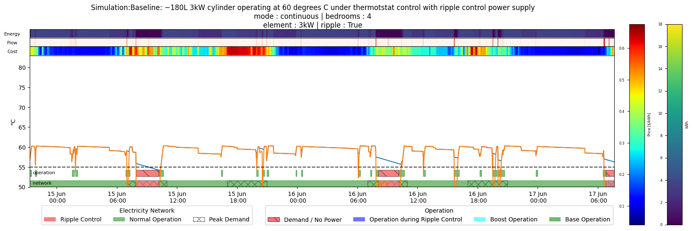
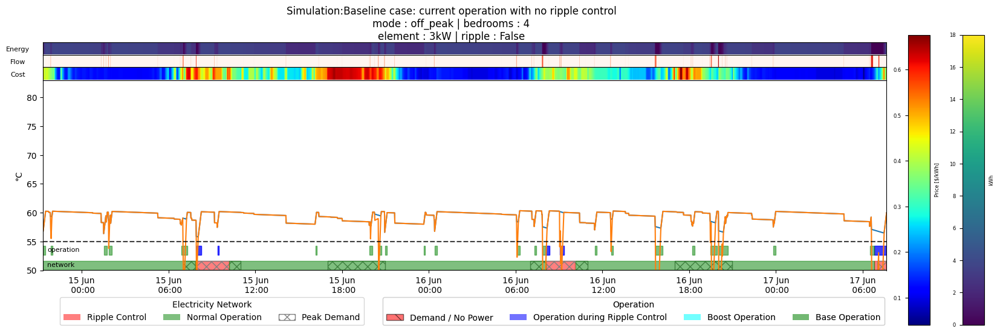
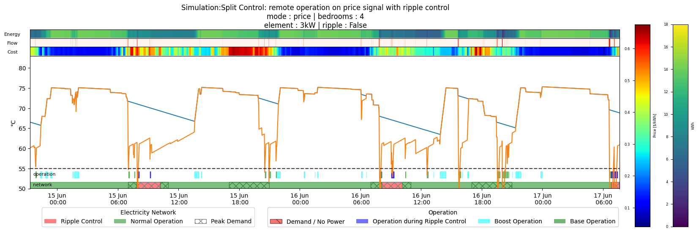
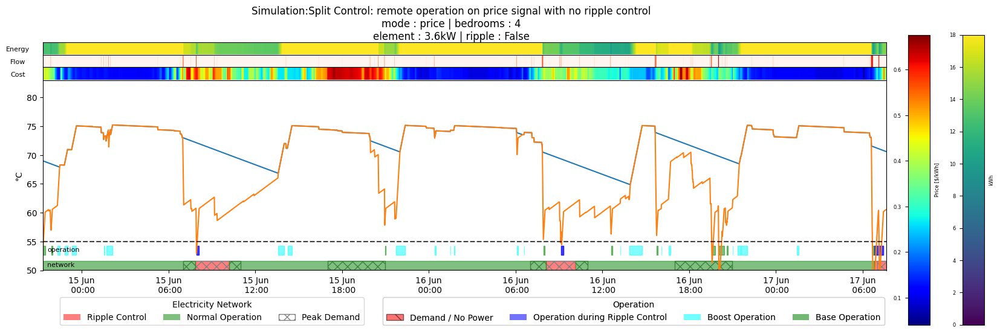

strategies[0] = {'name': 'Baseline: ~180L 3kW cylinder operating at 60 degrees C under thermotstat control with ripple control power supply',
'operation': 'continuous',
'bedrooms': 4,
'element' :3,
'Tset_H' : 60,
'Tset_L' : 60,
'radius' : 0.22,
'height' : 1.1,
'ripple' : True}Simulations
Comparison of operation modes on the local network
Want to look at some parameters around the cylinder profile and control philosophy to see the impact of these on three aspects:
- The local network lines demand - particularly at peak times where the lines face constraints
- The cost of power to service the demand
Assumptions
In order to have reasonable comparisons over different operating scenarios we will use the draw profile of a specific 4 bedroom unit from a historical hot water usage dataset.
Base Case
The base installation is a typical 180L hot water cylinder in a 4 bedroom houshold
plot_sim(strategies[0], df[0].iloc[20000:23500]) for row in ser.iteritems():
Base Case without Ripple Control
The base installation is a typical 180L hot water cylinder in a 4 bedroom houshold however the cylinder is not interupted by ripple control
strategies[1] = {'name':'Baseline case: current operation with no ripple control',
'operation': 'off_peak',
'bedrooms': 4,
'element' :3,
'Tset_H' : 60,
'Tset_L' : 60,
'radius' : 0.22,
'height' : 1.1,
'ripple' : False}plot_sim(strategies[1], df[1].iloc[20000:23500]) for row in ser.iteritems():
Thermal Boosting on Base Case with no Ripple Control
Apply Thermal Boosting Control on the base installation with the cylinder withou ripple control
strategies[2] = {'name': 'Split Control: remote operation on price signal with ripple control',
'operation': 'price',
'bedrooms': 4,
'element' :3,
'Tset_H' : 75,
'Tset_L' : 60,
'radius' : 0.22,
'height' : 1.1,
'ripple' : False}plot_sim(strategies[2], df[2].iloc[20000:23500])
Thermal Boosting with larger cylinder and element
Apply Thermal Boosting Control on a ~280 L cylinder with a slightly larger element.
strategies[3] = {'name': 'Split Control: remote operation on price signal with no ripple control',
'operation': 'price',
'bedrooms': 4,
'element' :3.6,
'Tset_H' : 75,
'Tset_L' : 60,
'radius' : 0.25,
'height' : 1.4,
'ripple' : False}plot_sim(strategies[3], df[3].iloc[20000:23500]) for row in ser.iteritems():
Compare Simultions
summary.T| 0 | 1 | 2 | 3 | |
|---|---|---|---|---|
| name | Baseline: ~180L 3kW cylinder operating at 60 d... | Baseline case: current operation with no rippl... | Split Control: remote operation on price signa... | Split Control: remote operation on price signa... |
| operation | continuous | off_peak | price | price |
| bedrooms | 4 | 4 | 4 | 4 |
| element | 3.0 | 3.0 | 3.0 | 3.6 |
| Tset_H | 60 | 60 | 75 | 75 |
| Tset_L | 60 | 60 | 60 | 60 |
| radius | 0.22 | 0.22 | 0.22 | 0.25 |
| height | 1.1 | 1.1 | 1.1 | 1.4 |
| ripple | True | False | True | False |
| start_time | 2020-06-01 00:00:00 | 2020-06-01 00:00:00 | 2020-06-01 00:00:00 | 2020-06-01 00:00:00 |
| end_time | 2020-06-30 23:59:00 | 2020-06-30 23:59:00 | 2020-06-30 23:59:00 | 2020-06-30 23:59:00 |
| volume | 167.258393 | 167.258393 | 167.258393 | 274.889357 |
| peak_demand | 0.221319 | 0.228472 | 0.130069 | 0.142 |
| local_kwh | 299.35 | 287.35 | 145.95 | 142.5 |
| remote_kwh | 0.0 | 0.0 | 136.35 | 217.44 |
| total_kwh | 299.35 | 287.35 | 282.3 | 359.94 |
| local_cost | 73.457955 | 75.63247 | 38.815806 | 41.766554 |
| remote_cost | 0.0 | 0.0 | 19.245516 | 30.468016 |
| total_cost | 73.457955 | 75.63247 | 58.061322 | 72.23457 |
| t_mean | 58.855103 | 59.063961 | 70.048462 | 70.672908 |
| loss_of_service | 1.777778 | 0.87963 | 0.0 | 0.0 |
| peak_reduction | 0.0 | 3.23188 | -41.229997 | -35.839347 |
| cost_reduction | 0.0 | 2.960217 | -20.95979 | -1.665422 |